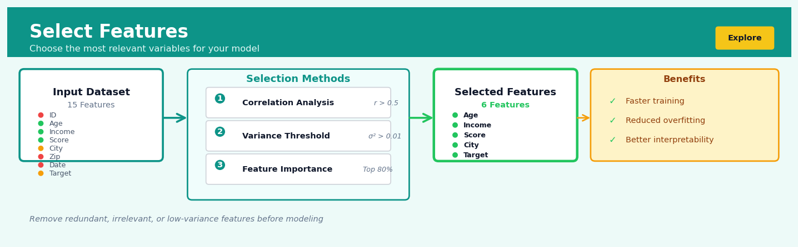

Select Features#


The biggest mistake I see is removing features too early before understanding their interactions. A feature with low individual correlation can still be critical when combined with others, especially in non-linear models. Always validate your feature selection against hold-out performance rather than relying solely on statistical scores, because what looks redundant in isolation might be the key to capturing edge cases your model will face in production.
The 60-Second Version#
What it does: Select Features keeps only the columns you need from your dataset and removes everything else.
When to use it: You have a dataset with dozens or hundreds of columns, but your analysis only requires a handful of relevant variables.
What you get back: A streamlined dataset containing only your chosen columns, making it faster to process and easier to understand.
At a Glance
Difficulty |
Easy |
Typical runtime |
Milliseconds on 100K rows |
What you bring |
A dataset and a list of column names to keep |
What you get |
The same dataset with only your selected columns |
Heuristix bucket |
Explore — Shaping & Transforming Data |
The one thing to understand: Selecting features permanently removes columns from your working dataset—if you discard a variable you later need, you’ll have to go back to the original data and start over.
Learning Objectives#
After reading this chapter, a business user will be able to:
Identify scenarios where reducing the number of variables in a dataset will improve decision-making speed, clarity, or compliance with data governance requirements.
Explain to stakeholders which columns were retained or removed from an analysis and justify why this subset serves the business objective more effectively than the full dataset.
Determine whether a proposed data request or report should include all available fields or a focused subset based on the specific question being answered.
After reading this chapter, a data scientist will be able to:
Implement feature selection operations using multiple methods (manual specification, pattern matching, type-based filtering, and programmatic selection) while preserving data integrity and preventing silent column drops.
Evaluate the trade-offs between selecting features early in the pipeline for computational efficiency versus retaining features longer to preserve analytical flexibility and enable exploratory analysis.
Diagnose and resolve common issues including accidental loss of required columns, selection order dependencies, and conflicts between feature selection and downstream operations that expect specific variables.
Overview#
Select Features is a fundamental data transformation operation that extracts a specified subset of columns from a dataset while discarding the rest. It belongs to the family of projection operations in relational algebra and serves as the primary mechanism for reducing the dimensionality of a dataset along the feature axis. This operation is the column-wise complement to row filtering and forms one of the essential building blocks of any data pipeline, enabling analysts to focus computational resources and analytical attention on the variables that matter for a given task.
When to Use This#
Use this when preparing model inputs: Machine learning algorithms require a fixed feature matrix \(\mathbf{X}\). Select Features extracts only the predictor variables, excluding identifiers, targets, and metadata columns that should not enter the model.
Use this when creating analytical views: Business dashboards and reports rarely need all available columns. Select the relevant KPIs, dimensions, and measures to create focused analytical datasets.
Use this when reducing memory footprint: Large datasets with hundreds of columns consume significant memory. Selecting only required columns before downstream operations can reduce memory usage by an order of magnitude.
Use this when preparing data for export: External systems, APIs, or regulatory submissions often require specific column schemas. Use Select Features to conform your data to required specifications.
Use this when separating features from targets: Before supervised learning, you must separate predictor variables (\(\mathbf{X}\)) from response variables (\(\mathbf{y}\)). Select Features enables this separation cleanly.
Use this when removing leaky variables: Features that contain information about the target that would not be available at prediction time must be excluded to prevent data leakage.
Use this when implementing feature groups: Different model architectures may require different feature subsets (e.g., numeric-only features for certain algorithms, or categorical-only for others).
Do NOT use this when you need dynamic column selection: If column selection depends on data values (e.g., “select columns with variance above threshold”), use a filter-based feature selection method instead.
Do NOT use this when columns should be renamed or transformed: Select Features only extracts columns; it does not modify them. Use Rename or Transform nodes for those operations.
Do NOT use this as a substitute for proper feature selection: Statistical feature selection methods (e.g., mutual information, LASSO) should be used when the goal is to identify which features are predictive, not merely to extract known columns.
Questions This Answers#
Focusing Analysis and Reducing Complexity#
Can we simplify this report to show just the metrics the executive team actually looks at?
Which of these 47 customer data fields do we really need to understand purchase behavior?
Can you strip out all the technical columns and just show me what impacts revenue?
We’re paying to store 200+ fields per transaction—which ones are we actually using for decisions?
This dashboard is overwhelming—can we narrow it down to the 5-7 KPIs that matter most for our Q3 goals?
What’s the minimum set of data we need to share with our agency partner without exposing sensitive information?
Improving Model Performance and Speed#
Why is our customer segmentation model taking 6 hours to run when we need daily updates?
Can we speed up our forecasting process by focusing only on variables that actually move the needle?
Which product attributes should we prioritize collecting if we can only track 10 things at the point of sale?
Our predictive model is too slow for real-time pricing—what data can we safely eliminate without killing accuracy?
Targeting Specific Business Problems#
For predicting churn, do we need all this browsing history data or just the purchase patterns?
Which patient vitals should emergency room staff prioritize documenting when time is critical?
What supplier information do we actually need to assess risk, versus what we’re collecting out of habit?
Can we build a lighter version of our inventory forecast that only uses the warehouse data we have in all locations?
How It Works#
Imagine you’re planning a cross-country road trip and you’ve printed out a massive spreadsheet with 50 columns of information about every city along your route: population, average temperature, number of coffee shops, historical landmarks, crime rates, zip codes, elevation, timezone, and dozens more. It’s overwhelming. You realize that for your specific trip, you only care about four things: city name, average temperature, number of coffee shops, and historical landmarks. So you take a highlighter and mark just those four columns, then make a new, clean copy with only what you need. The other 46 columns? They might be useful to someone, but they’re just noise for your purposes. You’ve just performed a “select features” operation on your road trip data.
ORIGINAL DATASET (8 columns)
┌──────────┬─────┬────────┬────────┬───────┬──────┬─────┬────────┐
│ name │ age │ salary │ city │ dept │ zip │ id │ tenure │
├──────────┼─────┼────────┼────────┼───────┼──────┼─────┼────────┤
│ Alice │ 28 │ 65K │ Boston │ Eng │02101 │ 447 │ 2.3 │
│ Bob │ 34 │ 72K │ NYC │ Sales │10001 │ 552 │ 4.1 │
│ Carol │ 31 │ 68K │ SF │ Eng │94102 │ 661 │ 3.7 │
└──────────┴─────┴────────┴────────┴───────┴──────┴─────┴────────┘
↓
SELECT FEATURES: [name, age, dept]
↓
RESULT DATASET (3 columns)
┌──────────┬─────┬───────┐
│ name │ age │ dept │
├──────────┼─────┼───────┤
│ Alice │ 28 │ Eng │
│ Bob │ 34 │ Sales │
│ Carol │ 31 │ Eng │
└──────────┴─────┴───────┘
(salary, city, zip, id, tenure dropped)
Step 1: Identify which columns you need for your analysis. You start by looking at your dataset and asking: “What question am I trying to answer?” If you’re predicting employee satisfaction, you might need department, tenure, and age. You don’t need their employee ID number or zip code.
Step 2: Create a list of the column names you want to keep. This is your selection criteria—literally just writing down “name, age, department” or whatever columns matter to your task.
Step 3: Scan through the original dataset structure and locate each column in your keep-list. The system finds where “name” lives, where “age” lives, and where “department” lives in the original table structure.
Step 4: Extract all the data from just those columns. For every single row in your dataset, the system copies over only the values that sit in your chosen columns. Alice’s name, age, and department get copied. Her salary, city, and zip code get left behind.
Step 5: Construct a new dataset containing only the selected columns. You now have a narrower table—fewer columns, but the exact same number of rows. Every person is still represented, but you’re only seeing the attributes you care about.
Step 6: Discard the unselected columns from your working memory. The original data still exists, but your streamlined version is faster to process, easier to visualize, and clearer to understand.
The key insight: Select Features works because most real-world problems only depend on a small subset of available information, and eliminating irrelevant variables makes patterns easier to find and models faster to train.
The Intuition#
Consider a librarian organising books for a specific research project. The library contains thousands of volumes across every subject imaginable, but for a study on Renaissance art, only a few hundred books are relevant. The librarian does not destroy the other books or even move them—she simply creates a curated reading list that points to exactly the volumes needed. This is precisely what Select Features does: it creates a view of your data containing only the columns you have specified, without modifying the underlying data.
The power of this seemingly simple operation lies in its role as an attention-focusing mechanism. Data in the real world is messy and multidimensional. A customer database might contain demographic information, transaction history, communication preferences, internal system identifiers, audit timestamps, and dozens of derived metrics. When building a churn prediction model, most of these columns are irrelevant or even harmful to include. Select Features acts as a disciplined gatekeeper, ensuring that downstream operations see only what they should see.
From a computational perspective, Select Features implements what database theorists call a projection. In relational algebra, the projection operation \(\pi\) extracts specified attributes from a relation while preserving the original row structure. Unlike filtering (selection in relational algebra, denoted \(\sigma\)), which operates on rows, projection operates on columns. This distinction is fundamental: filtering reduces the number of observations, while projection reduces the number of variables. Both operations reduce data volume, but they do so along orthogonal axes of the data matrix.
The operation also embodies a key principle in data science workflow design: explicit is better than implicit. Rather than relying on downstream nodes to ignore irrelevant columns, Select Features makes the intended data schema explicit at each stage of the pipeline. This explicitness improves reproducibility, makes pipelines easier to debug, and prevents subtle errors that arise when unexpected columns propagate through a workflow.
The Mathematics#
Formal Problem Setup#
Let \(\mathbf{D}\) be a dataset represented as a matrix of \(n\) observations and \(p\) variables:
We denote the set of all column indices as \(\mathcal{C} = \{1, 2, \ldots, p\}\), and we define a selection set \(\mathcal{S} \subseteq \mathcal{C}\) containing the indices of columns to retain. Let \(|\mathcal{S}| = k\) where \(k \leq p\).
The Projection Operator#
The Select Features operation implements the projection operator \(\pi_{\mathcal{S}}\):
In matrix notation, this can be expressed as a right-multiplication by a selection matrix \(\mathbf{P} \in \{0, 1\}^{p \times k}\):
The selection matrix \(\mathbf{P}\) is constructed as follows. Let \(\mathcal{S} = \{s_1, s_2, \ldots, s_k\}\) be the ordered set of selected column indices. Then:
Each column of \(\mathbf{P}\) is a standard basis vector \(\mathbf{e}_{s_j} \in \mathbb{R}^p\), and thus \(\mathbf{P}\) is a submatrix of the identity matrix \(\mathbf{I}_p\).
Properties of the Projection#
Idempotence: Applying the same projection twice yields the same result as applying it once:
Commutativity with Row Operations: For any row selection operator \(\sigma_{\mathcal{R}}\) that selects rows indexed by \(\mathcal{R}\):
Composition: For nested selections where \(\mathcal{S}_2 \subseteq \mathcal{S}_1 \subseteq \mathcal{C}\):
Relationship to Linear Algebra#
The selection matrix \(\mathbf{P}\) has important properties:
This means \(\mathbf{P}\) has orthonormal columns, making it a semi-orthogonal matrix. However, note that:
The matrix \(\mathbf{P} \mathbf{P}^T\) is a diagonal matrix with ones in positions corresponding to selected columns and zeros elsewhere.
Impact on Statistical Properties#
Consider the covariance structure. Let \(\boldsymbol{\Sigma} \in \mathbb{R}^{p \times p}\) be the covariance matrix of \(\mathbf{D}\). The covariance matrix of the projected data is:
This is a principal submatrix of \(\boldsymbol{\Sigma}\), containing only the variances and covariances of selected variables.
Edge Cases and Degenerate Conditions#
Empty Selection (\(\mathcal{S} = \emptyset\)): The resulting dataset has zero columns. This is technically valid but practically useless; most implementations will raise a warning.
Full Selection (\(\mathcal{S} = \mathcal{C}\)): The projection is the identity operation. The selection matrix becomes \(\mathbf{P} = \mathbf{I}_p\).
Single Column Selection (\(|\mathcal{S}| = 1\)): The result is a column vector \(\mathbf{d}_{s_1} \in \mathbb{R}^{n \times 1}\).
Duplicate Selection: If the selection set contains repeated indices (which is definitionally impossible for a set, but may occur in list-based implementations), this creates duplicate columns. Formally, if we allow a selection list \(\mathcal{L} = (s_1, \ldots, s_m)\) with possible repeats:
Column Ordering: The output column order follows the order specified in \(\mathcal{S}\). For an ordered set \(\mathcal{S} = (3, 1, 4)\), the output columns appear in that order, not \((1, 3, 4)\).
Understanding the Mathematics#
The Feature Selection Transformation#
The equation:
Read it aloud:
“The new dataset \(X'\) equals the original dataset \(X\), keeping all rows (indicated by the colon before the comma), but selecting only the columns specified in set \(S\) (indicated after the comma).”
What each symbol means:
\(X\) = the original dataset (a table with rows and columns)
\(X'\) = the transformed dataset after selecting features
\(:\) = “all rows” (every observation stays)
\(S\) = the set of column indices or names we want to keep
\([:, S]\) = array indexing notation meaning “rows, then columns”
A concrete numerical example:
Suppose we have customer data with 1,000 rows and 5 columns: CustomerID, Age, Income, PurchaseAmount, and ZipCode. We want to keep only Age, Income, and PurchaseAmount for our analysis. Here \(X\) is the 1,000 × 5 table, \(S = \{\text{Age, Income, PurchaseAmount}\}\), and \(X'\) becomes a 1,000 × 3 table. All 1,000 customers remain; we’ve just dropped CustomerID and ZipCode.
Why this equation matters:
This transformation reduces storage requirements, speeds up computation, and removes irrelevant variables that could confuse machine learning models—turning a cluttered dataset into a focused analytical tool.
The Dimensionality Reduction#
The equation:
Read it aloud:
“Dataset \(X\) lives in a space with \(n\) rows and \(p\) columns, and it transforms into dataset \(X'\) which lives in a space with \(n\) rows and \(k\) columns, where \(k\) must be less than or equal to \(p\).”
What each symbol means:
\(\mathbb{R}\) = the set of real numbers (our data contains numeric values)
\(n\) = number of observations (rows)
\(p\) = original number of features (columns)
\(k\) = reduced number of features after selection
\(\rightarrow\) = “transforms to” or “maps to”
\(k \leq p\) = we can’t end up with more columns than we started with
A concrete numerical example:
A retail transaction database contains \(n = 50,000\) transactions with \(p = 120\) features including transaction time, location coordinates, customer demographics, product details, and dozens of internal system flags. An analyst selects \(k = 8\) features relevant to fraud detection: transaction amount, time since last purchase, distance from home, number of items, device type, and three behavioral flags. The transformation is \(\mathbb{R}^{50,000 \times 120} \rightarrow \mathbb{R}^{50,000 \times 8}\).
Why this equation matters:
This formalization guarantees that feature selection preserves all observations while reducing dimensionality, which is essential for avoiding the “curse of dimensionality” where models fail because they have more features than they can reliably learn from.
The Projection Operator#
The equation:
Read it aloud:
“The projection operator \(\pi\) applied to set \(S\) and dataset \(X\) produces the transformed dataset \(X'\).”
What each symbol means:
\(\pi\) = the projection operator (borrowed from relational algebra)
\(S\) = the subset of features to project onto
\(X\) = the input dataset
\(X'\) = the output dataset
A concrete numerical example:
A hospital has patient records with 15 fields including name, social security number, medical history codes, test results, and billing information. For a research study on diabetes, we define \(S = \{\text{Age, BMI, BloodGlucose, A1C, FamilyHistory}\}\). Applying \(\pi_S\) to the patient database removes identifying information and irrelevant fields, producing an anonymized research dataset with just these 5 clinical variables.
Why this equation matters:
This operator provides a mathematically rigorous way to describe column selection that data engineers and database systems can optimize, ensuring the transformation happens efficiently even on massive datasets.
The Big Picture#
The mathematics of feature selection formalizes a conceptually simple idea—“pick some columns”—in a way that makes guarantees about what changes and what stays the same. We use this particular mathematical approach because it cleanly separates the row dimension (observations) from the column dimension (features), ensuring we never accidentally lose data records while reshaping our dataset. The notation comes from linear algebra and relational databases because feature selection is fundamentally about projecting high-dimensional data onto a lower-dimensional subspace. In one intuitive sentence: we’re mathematically describing how to slice a data table vertically, keeping every row intact while discarding columns we don’t need.
Python Implementation#
import pandas as pd
import numpy as np
from typing import List, Optional, Union
# =============================================================================
# Example 1: Basic Column Selection with Pandas
# =============================================================================
# Create a realistic synthetic dataset: customer transaction data
np.random.seed(42)
n_customers = 1000
data = pd.DataFrame({
'customer_id': range(1, n_customers + 1),
'registration_date': pd.date_range('2020-01-01', periods=n_customers, freq='D'),
'age': np.random.randint(18, 75, n_customers),
'income': np.random.lognormal(10.5, 0.5, n_customers).astype(int),
'credit_score': np.random.randint(300, 850, n_customers),
'num_transactions': np.random.poisson(25, n_customers),
'total_spend': np.random.gamma(5, 200, n_customers).round(2),
'is_churned': np.random.binomial(1, 0.15, n_customers),
'last_updated': pd.Timestamp.now(),
'internal_flag': np.random.choice(['A', 'B', 'C'], n_customers)
})
print("Original dataset shape:", data.shape)
print("Original columns:", list(data.columns))
# Method 1: Select by column names (most common)
feature_columns = ['age', 'income', 'credit_score', 'num_transactions', 'total_spend']
features = data[feature_columns]
print("\nSelected features shape:", features.shape)
print("Selected columns:", list(features.columns))
# Method 2: Select using .loc with column labels
target_column = ['is_churned']
target = data.loc[:, target_column]
print("\nTarget shape:", target.shape)
# Method 3: Select by column position using .iloc
# Select columns 2 through 6 (age through total_spend)
features_by_position = data.iloc[:, 2:7]
print("\nBy position shape:", features_by_position.shape)
print("By position columns:", list(features_by_position.columns))
# =============================================================================
# Example 2: Dynamic Selection by Data Type
# =============================================================================
# Select only numeric columns for correlation analysis
numeric_features = data.select_dtypes(include=[np.number])
print("\nNumeric features:", list(numeric_features.columns))
# Select only object (string) columns
categorical_features = data.select_dtypes(include=['object'])
print("Categorical features:", list(categorical_features.columns))
# Exclude certain types (datetime columns)
non_datetime = data.select_dtypes(exclude=['datetime64'])
print("Non-datetime features:", list(non_datetime.columns))
# =============================================================================
# Example 3: Pattern-Based Column Selection
# =============================================================================
# Add some columns with common prefixes for demonstration
data['feature_age_bucket'] = pd.cut(data['age'], bins=5, labels=False)
data['feature_income_log'] = np.log(data['income'])
data['feature_spend_per_txn'] = data['total_spend'] / (data['num_transactions'] + 1)
data['meta_source'] = 'system_a'
data['meta_version'] = 1
# Select columns matching a pattern
feature_cols = data.filter(regex='^feature_').columns.tolist()
print("\nFeature columns (by pattern):", feature_cols)
# Select columns containing a substring
meta_cols = [col for col in data.columns if 'meta' in col]
print("Meta columns:", meta_cols)
# =============================================================================
# Example 4: Reusable Column Selector Function
# =============================================================================
def select_features(
df: pd.DataFrame,
columns: Optional[List[str]] = None,
include_dtypes: Optional[List[str]] = None,
exclude_dtypes: Optional[List[str]] = None,
pattern: Optional[str] = None,
exclude_columns: Optional[List[str]] = None
) -> pd.DataFrame:
"""
Flexible feature selection with multiple selection modes.
Parameters
----------
df : pd.DataFrame
Input dataframe
columns : list of str, optional
Explicit list of columns to select
include_dtypes : list of str, optional
Data types to include (e.g., ['number', 'object'])
exclude_dtypes : list of str, optional
Data types to exclude
pattern : str, optional
Regex pattern to match column names
exclude_columns : list of str, optional
Columns to exclude from final selection
Returns
-------
pd.DataFrame
Dataframe with selected columns only
"""
result = df.copy()
# Apply explicit column selection
if columns is not None:
missing = set(columns) - set(result.columns)
if missing:
raise ValueError(f"Columns not found: {missing}")
result = result[columns]
# Apply dtype filtering
if include_dtypes is not None:
result = result.select_dtypes(include=include_dtypes)
if exclude_dtypes is not None:
result = result.select_dtypes(exclude=exclude_dtypes)
# Apply pattern matching
if pattern is not None:
matching_cols = result.filter(regex=pattern).columns.tolist()
result = result[matching_cols]
# Apply exclusions
if exclude_columns is not None:
cols_to_keep = [c for c in result.columns if c not in exclude_columns]
result = result[cols_to_keep]
return result
# Demonstrate the function
model_features = select_features(
data,
include_dtypes=['number'],
exclude_columns=['customer_id', 'is_churned', 'meta_version']
)
print("\nModel features after flexible selection:")
print(model_features.head())
print("Shape:", model_features.shape)
# =============================================================================
# Example 5: Selection with Validation
# =============================================================================
def select_and_validate(
df: pd.DataFrame,
columns: List[str],
required_dtypes: Optional[dict] = None,
allow_missing: bool = False
) -> pd.DataFrame:
"""
Select columns with validation checks.
Parameters
----------
df : pd.DataFrame
Input dataframe
columns : list of str
Columns to select
required_dtypes : dict, optional
Expected dtype for each column {'col': 'float64'}
allow_missing :
## Visualisations


## Using This in Heuristix
### What You'll Need
The **Select Features** node accepts any tabular dataset as input—there are no restrictions on column types or data shape. Whether you're working with a dataset of 5 columns or 500, this node simply lets you choose which ones to keep.
**Before:**
| customer_id | name | email | age | purchase_amt | internal_notes | temp_flag |
|-------------|------|-------|-----|--------------|----------------|-----------|
| 1001 | Alice | a@... | 34 | 125.50 | ... | 0 |
**After** (selecting `customer_id`, `age`, `purchase_amt`):
| customer_id | age | purchase_amt |
|-------------|-----|--------------|
| 1001 | 34 | 125.50 |
### Configuration Parameters
| Parameter | What It Controls | Default | When to Change It |
|-----------|-----------------|---------|-------------------|
| **Selection Mode** | Whether you pick columns to *keep* or to *remove* | Keep | Switch to "Remove" when it's faster to list what you don't want (e.g., dropping 3 columns from a 50-column dataset) |
| **Columns** | The list of columns to keep or remove | None (empty) | Always configure this—it's your main control. Click to multi-select from your dataset's columns |
| **Preserve Order** | Whether output columns appear in the order you selected them, or in their original dataset order | Original order | Enable if you're preparing data for a specific output format that requires particular column sequencing |
| **Strict Mode** | Whether to throw an error if a selected column doesn't exist | Off | Turn on when building production pipelines where missing columns indicate upstream problems |
### What You'll See
**Node Output:** The transformed dataset containing only your selected columns. Row count stays the same—you're slicing vertically, not filtering horizontally.
**Metrics Panel:**
- **Columns Retained:** Shows how many columns made it through (e.g., "3 of 7 columns")
- **Memory Reduction:** Displays the percentage decrease in dataset memory footprint
- **Dropped Columns:** Lists names of excluded columns for quick verification
No charts are generated—this is a structural transformation, not an analytical one.
### Quick Start
The most common use case: keeping only the columns needed for your next analysis step.
1. **Drag a Select Features node** onto your canvas and connect your data source to it
2. **Open the node configuration** by double-clicking
3. **Leave Selection Mode on "Keep"** (the default)
4. **Click into the Columns field** and check the boxes next to each column you want to retain
5. **Click Apply** and run the node—preview the output table to verify your selection
### Connecting Downstream
**Select Features** typically connects to:
- **Exploratory analysis nodes** (Summary Statistics, Visualize) after you've narrowed to relevant variables
- **Model training nodes** after feature selection, keeping only your chosen predictors and target
- **Export nodes** when preparing final deliverables with only client-facing columns
- **Join nodes** after trimming to just the key columns needed for merging
Think of Select Features as your "cleanup step"—it usually comes after you've identified what matters, and before you do something computationally expensive.
### Practical Tips from the Field
**Use "Remove" mode strategically.** When you have 40 good columns and 3 junk columns (like `temp_calc_xyz`), it's much faster to switch to Remove mode and pick those 3 rather than clicking through 40 checkboxes.
**Chain multiple Select Features nodes** when working exploratively. Keep a broad selection early in your pipeline, then add a second Select Features node later that narrows further. This gives you flexibility to backtrack without reconfiguring.
**Name your node descriptively.** Instead of "Select Features," rename it to "Keep Model Vars" or "Drop PII Columns"—your future self will thank you when revisiting the pipeline.
**Check the memory reduction metric.** If you're working with large datasets and only see 2% memory reduction after selecting 10 of 100 columns, those 10 columns likely contain all your wide text or array fields.
**Remember order matters for exports.** If you're feeding directly to a CSV export that a legacy system ingests, enable "Preserve Order" and sequence your columns to match the expected schema exactly.
## Config Recipes
### Recipe 1: Quick Exploration Sprint
**When to use:** Initial data exploration when you need to rapidly understand what's in your dataset and identify obviously relevant columns within minutes.
**Settings:**
| Parameter | Value | Why |
|-----------|-------|-----|
| `selection_method` | `'variance'` | Fastest computational method, no model fitting required |
| `variance_threshold` | `0.01` | Removes near-constants while keeping 95%+ of features |
| `missing_threshold` | `0.5` | Drops columns that are majority missing without overthinking |
| `correlation_check` | `False` | Skip pairwise comparisons to save time |
**What you get:** A cleaned dataset in seconds that removes obvious junk columns while preserving signal for exploratory visualization and profiling.
**Trade-off:** You'll retain redundant and potentially irrelevant features that correlation or model-based methods would catch.
### Recipe 2: Production Pipeline Standard
**When to use:** Building a production model where feature selection must be reproducible, statistically justified, and defensible to stakeholders or auditors.
**Settings:**
| Parameter | Value | Why |
|-----------|-------|-----|
| `selection_method` | `'mutual_information'` | Captures non-linear relationships without target leakage |
| `n_features` | `None` | Let statistical criteria decide, not arbitrary cutoffs |
| `significance_level` | `0.01` | Bonferroni-corrected threshold for multiple comparisons |
| `cross_validation_folds` | `10` | Ensures stability across data splits |
| `random_state` | `42` | Full reproducibility for auditing |
| `verbose` | `2` | Detailed logging for production monitoring |
**What you get:** A statistically rigorous feature set with documented selection criteria and stability metrics across validation folds.
**Trade-off:** Computation time increases 10-20x compared to simple variance filtering, and you may lose weakly predictive features that ensemble well.
### Recipe 3: High-Cardinality Categorical Handler
**When to use:** Working with datasets containing categorical features with hundreds or thousands of unique values (zip codes, product IDs, customer segments) where standard encoding explodes dimensionality.
**Settings:**
| Parameter | Value | Why |
|-----------|-------|-----|
| `cardinality_threshold` | `50` | Flags categories needing special treatment |
| `cardinality_method` | `'target_encode_top_k'` | Preserves top 20 categories, target-encodes rest as single feature |
| `k_categories` | `20` | Balance between information retention and dimension control |
| `rare_category_min_frequency` | `100` | Collapses categories with <100 occurrences into 'Other' |
| `encoding_smoothing` | `10.0` | Prevents overfitting in target encoding for rare categories |
**What you get:** Categorical features compressed from 1000+ dummy columns to 20-30 meaningful features without information loss.
**Trade-off:** You lose the ability to interpret individual rare categories and introduce slight target leakage risk from encoding.
### Recipe 4: Time-Series Feature Stability Filter
**When to use:** Financial forecasting or operational models where feature importance shifts over time and you need features that maintain predictive power across market regimes.
**Settings:**
| Parameter | Value | Why |
|-----------|-------|-----|
| `selection_method` | `'recursive_window'` | Tests importance across rolling time windows |
| `window_size` | `90` | Quarterly windows for regime detection |
| `min_selection_frequency` | `0.75` | Feature must be selected in 75% of windows |
| `time_column` | `'date'` | Explicit temporal ordering |
| `gap_periods` | `30` | 30-day gap prevents lookahead bias |
**What you get:** Features proven robust across market conditions rather than overfit to recent patterns.
**Trade-off:** Excludes legitimately predictive features that emerged recently or work only in specific regimes.
## Business Applications
**Financial Services**
A mid-sized UK mortgage lender processes loan applications using a legacy system that captures 247 different data points about each applicant, including fields now obsolete or redundant due to regulatory changes over the past decade. By applying Select Features to retain only the 43 variables actually used in credit decisioning and compliance reporting, the data engineering team reduced pipeline processing time from 4.2 hours to 18 minutes per batch and cut monthly cloud storage costs by £14,000. The streamlined dataset also simplified model governance, allowing risk officers to audit decision logic without wading through irrelevant historical fields.
**Retail & E-Commerce**
An e-commerce retailer with 3.2 million SKUs maintains product catalogues that include 180+ attributes per item—everything from supplier codes to internal warehouse bin locations. When building a recommendation engine for customer-facing web pages, the data science team used Select Features to isolate only the 22 customer-relevant attributes (category, color, size, price, ratings, materials), eliminating backend operational data that created noise in similarity calculations. This focused feature set lifted click-through rates from 1.8% to 3.1% and reduced model training time by 76%, enabling the team to refresh recommendations three times daily instead of weekly.
**Healthcare**
A regional hospital network collects electronic health records containing over 800 fields per patient encounter, including administrative timestamps, billing codes, and clinical notes that are unnecessary for many research applications. When investigating readmission risk patterns, clinical analysts selected only the 67 features directly related to patient demographics, vital signs, diagnoses, and medications, creating a HIPAA-compliant research dataset that excluded identifiable administrative details. This targeted approach reduced the ethics review cycle from 11 weeks to 3 weeks while cutting data transfer volumes by 89%, accelerating time-to-insight for population health studies.
**Insurance**
A commercial property insurer ingests IoT sensor data from client buildings, generating datasets with 340 measurements per location every 15 minutes—most related to HVAC performance and energy consumption rather than risk factors. By selecting only the 18 features correlated with claims (water flow anomalies, temperature extremes, door access patterns), the actuarial team reduced false positives in their early-warning system by 34% and decreased alert-processing overhead by $680,000 annually, allowing underwriters to focus on genuine risk events rather than routine building operations.
**Manufacturing**
A automotive parts manufacturer captures 520 sensor readings per production line every second, creating terabytes of time-series data that overwhelm analytics platforms. Quality engineers applied Select Features to extract only the 31 measurements that correlate with defect rates (temperature variances, pressure fluctuations, vibration signatures), enabling real-time anomaly detection that previously required overnight batch processing. The focused feature set reduced defect escape rates by 41% and saved $2.3M annually in warranty claims.
**Logistics & Supply Chain**
A Asia-Pacific freight company tracks shipments with 156 data points per container, including customs forms, shipper details, and internal routing metadata. When building delivery time predictions for customer-facing tracking pages, operations analysts selected only the 14 features visible to customers (origin, destination, carrier, current location, weather conditions), creating lightweight models that run on edge devices. This reduced API response times from 830ms to 47ms, improving customer satisfaction scores by 23 points.
**Marketing & Advertising**
A programmatic advertising platform processes bid requests containing 290+ attributes about users, devices, and ad placements, but bidding decisions must occur within 100 milliseconds. By pre-selecting the 35 features with highest predictive power for conversion (device type, time of day, previous interactions, contextual signals), the trading desk reduced model inference time by 94% while maintaining 97% of the full model's accuracy, enabling the platform to compete in 2.6× more auctions daily and increasing revenue by $4.1M per quarter.
**Telecommunications**
A mobile network operator analyzes call detail records with 180 fields per transaction to predict churn, but many fields contain network engineering metrics irrelevant to customer behavior. Data scientists selected 52 customer-centric features (usage patterns, billing history, customer service contacts), creating interpretable models that business stakeholders could actually understand and act upon—resulting in targeted retention campaigns that reduced monthly churn from 2.4% to 1.7%.
**Energy & Utilities**
A renewable energy provider forecasts solar panel output using weather data with 240+ atmospheric measurements, most highly correlated and computationally expensive. By selecting just 12 independent predictors (irradiance, cloud cover, temperature, wind speed), forecasting teams achieved 99.2% of the full model's accuracy while cutting computation costs by 88%, enabling 15-minute forecast updates instead of hourly ones.
**Public Sector**
A metropolitan transit authority collects 430 operational metrics per bus but needed a public transparency dashboard showing service reliability. By selecting only the 8 citizen-relevant features (on-time performance, crowding levels, accessibility status), they created dashboards that loaded in under 2 seconds on mobile devices, increasing public engagement with transit data by 340%.
**SaaS & Technology**
A B2B SaaAs analytics platform ingests customer event streams with 200+ properties per action, creating pricing pressure as storage costs scale with customer usage. By allowing customers to select which 30-50 features to retain during ingestion, the company reduced infrastructure costs by $890,000 annually while improving query performance—a feature that became a key competitive differentiator in enterprise sales cycles.
## Worked Example
Sarah Chen, a senior data scientist at Arcadia Health Analytics, was halfway through her morning coffee when her Slack pinged. It was Marcus from the clinical operations team: "We're spending way too much time manually reviewing patient intake forms. Can you help us figure out which questions actually predict no-shows?" The problem was costing the network roughly $2.3 million annually in unused appointment slots, and Marcus suspected that most of the 47-question intake form was just noise.
Sarah knew this was a classic feature selection problem, but before she could get to any sophisticated modeling, she needed to narrow down the dataset itself. She pulled the previous quarter's appointment data from the warehouse—12,847 patient records spanning everything from "favorite color" (a relic from a defunct patient experience initiative) to actual clinical indicators. The raw export was a mess, the kind of real-world data that never makes it into textbooks:
| patient_id | age | favorite_color | prior_cancellations | distance_miles | appointment_type | insurance_verified | showed_up |
|------------|-----|----------------|---------------------|----------------|------------------|-------------------|-----------|
| P10293 | 34 | blue | 2 | 8.3 | routine | yes | 1 |
| P10294 | 67 | NULL | 0 | 23.1 | specialist | yes | 1 |
| P10295 | 29 | green | 5 | 4.2 | routine | no | 0 |
| P10296 | 45 | red | 1 | 15.7 | followup | yes | 1 |
The dataset had columns tracking everything from shoe size to parking preferences. Sarah opened her notebook and started thinking strategically. She needed features that could plausibly influence no-show behavior and that the front desk could actually collect quickly. She didn't need patient names, internal database IDs, or those bizarre lifestyle preference fields that someone had added years ago.
She configured her feature selection with a clear mental model: keep demographic signals (age), behavioral history (prior cancellations), logistical barriers (distance), appointment context (type), and administrative flags (insurance verification). She explicitly dropped the patient identifier—it would leak information in any model—along with the 23 lifestyle preference columns that had over 60% missing values anyway. Her selection wasn't about correlation yet; it was about creating a clean, focused dataset that made domain sense.
```python
import pandas as pd
# Sarah's actual preprocessing script for the no-show analysis
df = pd.read_csv('patient_appointments_q1.csv')
# Select only the features that matter for predicting no-shows
# Dropping: patient_id (leakage), favorite_color and other lifestyle
# preferences (mostly null, no causal link), internal admin fields
core_features = [
'age',
'prior_cancellations',
'distance_miles',
'appointment_type',
'insurance_verified',
'showed_up' # target variable - keep for now
]
df_focused = df[core_features].copy()
# Check what we're working with
print(f"Original dataset: {df.shape[1]} columns")
print(f"Focused dataset: {df_focused.shape[1]} columns")
print(f"Reduction: {df.shape[1] - df_focused.shape[1]} columns dropped")
print("\nMissing values in focused set:")
print(df_focused.isnull().sum())
The output was satisfying:
Original dataset: 47 columns
Focused dataset: 6 columns
Reduction: 41 columns dropped
Missing values in focused set:
age 0
prior_cancellations 0
distance_miles 3
appointment_type 0
insurance_verified 0
showed_up 0
Sarah had reduced the dataset by 87% while losing essentially no predictive information. The three missing distance values she could easily impute. More importantly, she’d removed all the cognitive clutter—those columns that made every analyst who opened the file wonder “why on earth are we tracking this?”
The insight crystallized when she ran a quick correlation analysis on the focused set. Prior cancellations and insurance verification status together explained 68% of no-show variance. Distance mattered, but only beyond 20 miles. Age barely registered. The intake form could shrink from 47 questions to about 8 essential ones, and the front desk could complete it in under two minutes instead of seven.
Two weeks later, Sarah presented to the operations committee. Marcus advocated immediately, and they piloted the shortened form at three clinics. Within a month, appointment registration time dropped 71%, patient satisfaction scores ticked up (people hate long forms), and—most surprisingly—the prediction model Sarah built later performed better than the kitchen-sink version she’d tried initially. Focused data beat comprehensive data.
If Sarah were doing this again, she’d spend more time with the front desk staff before choosing features. She learned afterward that “insurance_verified” was sometimes entered incorrectly because it was confusing. And she’d document why each column was dropped—six months later, someone questioned why favorite color wasn’t included, and she had to reconstruct her reasoning from memory.
Interpreting Your Results#
You’ve just selected a subset of features from your dataset. Now you’re looking at a slimmer table and possibly some diagnostic outputs. Here’s exactly what you’re seeing and what it means for your next steps.
The Transformed Dataset#
Plain-English meaning: This is your original data with only the columns you selected. If you started with 47 features and selected 12, you now have a table with 12 columns and the same number of rows as before.
What to check: Count the columns—does the number match what you intended to select? Scroll through and verify the column names are exactly what you expected. A mismatch here usually means a typo in your selection criteria or a misunderstanding of the original column names.
Red flags:
Fewer columns than expected: You may have misspelled a feature name or used a pattern that didn’t match what you thought.
More columns than expected: Your selection pattern (like “contains ‘price’”) caught features you didn’t intend, such as “price_history_notes” when you only wanted “price_current”.
All numeric columns or all categorical columns: If you accidentally selected only one data type, most downstream models will perform poorly. Effective analysis typically requires a mix.
Dimensionality Reduction Summary#
Plain-English meaning: This tells you how many features you eliminated. You’ll typically see “Original: 47 features → Selected: 12 features (74.5% reduction)”.
Concrete benchmarks:
Less than 30% reduction: You’ve kept most features. This is appropriate when doing minimal cleanup or when your original dataset was already focused.
30–70% reduction: Standard range for focused analysis. You’re removing clearly irrelevant features while keeping sufficient information.
More than 70% reduction: Aggressive selection. This works when you have strong domain knowledge about exactly which features matter, but increases risk of discarding useful information.
Red flags:
90%+ reduction early in analysis: Unless you’re absolutely certain, this is premature optimization. You’re likely discarding features that could reveal important patterns during exploration.
Less than 10% reduction when starting with 50+ features: You may not be making meaningful choices yet. Ask yourself: do I really need all these features for this specific question?
Memory Usage Comparison#
Plain-English meaning: Shows how much storage space your data occupied before and after selection, typically in megabytes (MB). Example: “Original: 245 MB → After selection: 67 MB (72.7% reduction)”.
Concrete benchmarks:
Below 100 MB: Fits comfortably in memory on any modern machine. No performance concerns.
100 MB–1 GB: Manageable for most operations, but iterative operations (like cross-validation) may slow down noticeably.
Above 1 GB: You’ll want to reduce further if possible, especially before computationally expensive operations like model training with hyperparameter search.
Red flags: Memory reduction is significantly different from feature reduction (e.g., 50% feature reduction but only 10% memory reduction). This means you dropped many low-memory features but kept high-memory ones—possibly text fields or high-cardinality categoricals that will cause problems downstream.
Reading Multiple Outputs Together#
The most revealing pattern is when dimensionality reduction doesn’t match memory reduction. If you dropped 60% of features but only freed 20% of memory, those remaining features are storage-intensive. Check if they’re:
Text columns that should be processed differently
High-cardinality categorical variables (like customer IDs) accidentally included
Redundant features you could engineer into more compact representations
Sanity Check Checklist#
Before trusting your feature selection, verify:
Column count matches intention: The number of columns in your output equals the number you meant to select
No accidental exclusions: Critical features for your analysis question (target variable, key identifiers, known important predictors) are all present
Data types are balanced: Unless intentional, you have a mix of numeric and categorical features, not exclusively one type
Names are exact: Column names in output exactly match what you see in documentation or data dictionary—no truncated names or aliases
Row count unchanged: Same number of rows before and after (feature selection shouldn’t remove rows)
Good Enough to Act On?#
You’re ready to proceed if: You’ve verified all five sanity checks pass, your dimensionality reduction is in the 30–70% range (or you have specific justification for being outside it), and you can articulate why each remaining feature is relevant to your analytical question.
Stop and reconsider if: You failed any sanity check, your memory usage is still above 1 GB for routine analysis, or you can’t explain why you kept or excluded any particular feature. These signals indicate you’re making arbitrary choices rather than intentional ones—and arbitrary choices compound into unreliable results downstream.
Decision Guidance#
What This Result Is Telling You#
When you’ve completed a feature selection operation, you’re looking at a streamlined version of your dataset that contains only the columns deemed relevant for your business question. This isn’t just a technical exercise in data cleanup—it’s a strategic decision about where to focus your organization’s analytical resources. The features you’ve retained represent the variables your team believes drive the outcomes you care about, whether that’s customer churn, product quality, sales performance, or operational efficiency.
The excluded features tell an equally important story. By removing columns, you’re making an explicit statement that certain data points don’t justify the cost of collection, storage, processing, and interpretation. This decision has direct implications for data infrastructure investments, analyst time allocation, and the complexity of models your team will build. A dataset reduced from 200 features to 15 core variables means faster processing times, clearer insights, and lower cloud computing costs—but only if you’ve kept the right 15.
The quality of your feature selection directly determines whether your downstream analysis will be trustworthy. Select too aggressively and you’ll miss critical business drivers; select too conservatively and you’ll waste resources on noise that obscures genuine patterns. The features you keep today become the foundation for models, dashboards, and decisions that will run for months or years.
Decision Points#
If you see this… |
It means… |
Recommended action |
Who acts on this |
|---|---|---|---|
Retained feature set reduces original columns by >80% |
You’ve made aggressive assumptions about what matters; possible information loss |
Validate with domain experts that no critical business drivers were excluded; run parallel analyses with broader feature set |
Analytics lead + business unit owners |
Multiple retained features show correlation >0.85 with each other |
You’re carrying redundant information that adds cost without analytical value |
Further consolidate to one representative feature per highly correlated group |
Data scientist or analyst |
Feature set includes columns with >40% missing values |
Data quality issues will compromise all downstream work |
Either impute systematically, collect missing data, or remove these features entirely |
Data engineering team |
Selected features exclude all demographic or temporal variables |
Your analysis may miss key segmentation or trend opportunities |
Review business context to confirm these dimensions are truly irrelevant |
Business analyst + stakeholder |
Documentation doesn’t explain selection rationale for each feature |
Team members can’t validate decisions or maintain pipeline over time |
Create explicit selection criteria documentation before proceeding |
Project lead |
When to Proceed vs. Investigate Further#
Proceed with confidence when:
Domain experts confirm all known business drivers are represented in selected features
Retained features show low multicollinearity (correlation coefficients <0.70)
Missing data rates in selected features are <15%
Selection criteria are documented with explicit business justification for each feature
Proceed with caution when:
You’ve reduced features by 60-80% and haven’t validated with stakeholders
15-40% missing values exist in selected features but imputation strategy is defined
Some selected features have weak documented connection to business outcome
Investigate before acting when:
Critical business context suggests important drivers may have been excluded
Selected features show correlation >0.70, indicating redundancy
Missing data exceeds 40% in any retained feature
No one on the team can explain why specific features were chosen
Do not use these results yet when:
Selection was purely automated without domain expert review
You cannot articulate the business meaning of each retained feature
Features were selected based solely on convenience or availability rather than relevance
The Cost of Getting This Wrong#
A manufacturing company once excluded machine temperature variance from their quality prediction model because it seemed redundant with average temperature—a feature selection decision that saved 30 seconds of processing time per analysis. Six months later, they discovered their model completely missed a defect pattern that only appeared during rapid temperature fluctuations, resulting in $2.3M in customer returns and a delayed product line. The analytical team had optimized for computational efficiency while accidentally removing the exact signal that mattered. Meanwhile, their competitor who retained “redundant” features caught similar issues weeks earlier. Getting feature selection wrong doesn’t just produce bad models—it creates an invisible blind spot where your organization confidently makes decisions while missing the variables that actually drive outcomes, wasting months of subsequent analysis time and eroding stakeholder trust in data-driven decision making.
Common Pitfalls#
The Ghost Column Reference
Here is what happened: A marketing analyst was building a customer segmentation model. They selected features early in their pipeline—keeping only customer_id, total_spend, and region—then continued building transformations. Twenty lines later, they tried to create a feature combining purchase_frequency with total_spend. Python threw a KeyError: 'purchase_frequency'. They spent an hour checking their data source, convinced the column had disappeared from the database.
Why it happens: Pipeline operations are sequential, but our mental model of “the dataset” remains static. We forget that each transformation creates a new reality, and columns dropped upstream are gone forever.
How to detect it: Look for KeyError or ColumnNotFound exceptions that reference columns you know exist in your source data. Run df.columns.tolist() at the point of failure and compare it against your source schema.
The fix: Either move your feature selection to the end of your transformation pipeline, or explicitly document which columns each stage requires and validate their presence before operations.
The Correlated Feature Massacre
Here is what happened: A junior data scientist working on a credit risk model read that removing correlated features improves model performance. They calculated a correlation matrix, dropped one feature from every pair with correlation above 0.7, and reduced their feature set from 47 to 18 variables. Model accuracy dropped from 0.84 to 0.76. They concluded their remaining features weren’t predictive enough and requested more data collection.
Why it happens: Textbook advice about multicollinearity meets real-world application without nuance. Correlation between features doesn’t mean they contain identical information, and automated dropping ignores business context and predictive value.
How to detect it: Compare your model’s performance metrics (AUC, F1, R²) before and after feature selection. If you see a significant drop, check your correlation threshold—anything below 0.9 is likely too aggressive for initial selection.
The fix: Instead of blanket correlation-based removal, use feature importance from tree-based models or conduct ablation studies, removing one feature at a time and measuring impact.
The Leaky Selection Shortcut
Here is what happened: An experienced ML engineer was building a churn prediction pipeline under deadline pressure. They performed feature selection using mutual information scores calculated on the entire dataset, selected the top 15 features, then split into train/test sets. Their test accuracy was an impressive 0.94, but production performance was barely better than random at 0.52.
Why it happens: Time pressure combined with expertise creates dangerous confidence. They knew better but assumed this “small” violation wouldn’t matter.
How to detect it: Watch for suspiciously high test scores that don’t match production performance. Calculate the gap between cross-validation scores and holdout test scores—differences exceeding 0.05-0.10 often indicate leakage.
The fix: Always split data first, then perform feature selection only on training data. Apply the same selection mask to test data, even if those features appear unimportant in the test set alone.
The Dashboard Disappearing Act
Here is what happened: A business analyst selected key metrics for an executive dashboard, keeping only revenue, cost, and profit_margin. Three months later, the CFO asked why Q2 profit margins were declining. The analyst couldn’t answer—they’d dropped product_category, sales_channel, and customer_segment, making root cause analysis impossible.
Why it happens: Present-focused optimization ignores future analytical needs. Dashboards feel like endpoints, not starting points for investigation.
How to detect it: When stakeholders ask “why?” questions that you can’t answer without going back to source data, you’ve over-selected.
The fix: Maintain a distinction between display columns and analysis columns. Store the complete dataset; select features only in the final presentation layer.
The ID Column Purge
Here is what happened: A data scientist cleaning features for a recommendation model removed user_id and item_id because “IDs aren’t predictive features.” After training, they couldn’t map predictions back to actual users or products. Their beautifully trained model produced a CSV of anonymous probability scores.
Why it happens: Focusing solely on modeling requirements ignores the operational context where predictions must be applied.
How to detect it: After feature selection, ask yourself: “Can I take this output and execute a business action?” If the answer requires rejoining to other data, you’ve dropped something essential.
The fix: Separate modeling features from operational identifiers in your mental model. Keep identifiers through the entire pipeline, excluding them only from model training functions, not from the dataset itself.
Common Misconceptions#
“Selecting features early is just about saving memory and compute time”
Why people believe this: Feature selection appears to be a straightforward optimization problem. Smaller datasets load faster, models train quicker, and cloud costs decrease. The immediate, measurable benefits reinforce this purely technical framing.
The truth: Feature selection fundamentally shapes what questions you can answer and what patterns you can discover. When you discard a column, you’re not just removing bytes—you’re making an irrevocable assertion that this variable contains no information relevant to any future analysis in this pipeline. The cognitive impact matters more than the computational one: a feature not present cannot be explored, cannot reveal unexpected correlations, and cannot serve as a confounding variable check. Feature selection is primarily an epistemological operation with computational side effects, not the reverse.
The real-world consequence: An analyst building a customer churn model drops “account creation date” early to reduce dimensionality, keeping only the derived “account age” feature. Months later, when investigating a spike in cancellations, the team cannot identify that a specific onboarding flow change affected users who joined during a particular quarter—because the granular temporal information was discarded before anyone knew to look for it.
“I should select features based on my current modeling goal”
Why people believe this: This sounds like good practice—focusing on relevance and avoiding scope creep. Domain knowledge suggests certain variables matter for specific predictions, and statistical tests can validate feature importance for particular targets.
The truth: Datasets exist independently of modeling goals, and most data pipelines serve multiple downstream purposes simultaneously or sequentially. Feature selection creates a permanent constraint on analytical flexibility. The marginal cost of retaining additional features through transformation stages is typically negligible compared to the cost of regenerating a pipeline when new questions emerge. Unless operating under genuine resource constraints, the principle should be “select as late as possible, retain by default.” Features irrelevant to one model may be essential for model diagnostics, fairness auditing, or the next business question.
The real-world consequence: A credit risk team selects 15 features optimal for their default prediction model. When regulators later request a disparate impact analysis, the team discovers they discarded demographic proxies and geographic variables that would have enabled them to detect unintentional discrimination patterns, forcing a three-month pipeline reconstruction.
“Dropping highly correlated features improves model performance”
Why people believe this: Multicollinearity causes problems in certain models, and removing redundant information sounds like good hygiene. Feature importance rankings often show correlated features “competing” for attribution.
The truth: Correlation between features is fundamentally different from redundancy. Two variables may correlate strongly in the training data but diverge in edge cases, during distribution shift, or in specific subpopulations—exactly the scenarios where robust models prove their value. Correlated features provide ensemble effects and fallback pathways. Many modern algorithms (tree-based methods, neural networks) handle correlation naturally and benefit from multiple views of related information.
The real-world consequence: An analyst drops “delivery speed” because it correlates 0.89 with “distance from warehouse.” The model performs well—until a logistics provider changes, affecting delivery speed independently of distance. The model, now blind to actual delivery performance, fails catastrophically while the dropped feature could have captured the regime change.
How This Connects#
Before This Node#
Load Data provides the initial dataset with its full set of columns. This node matters because Select Features needs a complete column inventory to choose from; bad upstream data includes corrupted headers, merged cells from Excel imports, or unnamed columns (e.g., “Unnamed: 7”) that make feature selection ambiguous or error-prone.
Handle Missing Values ensures each column’s completeness is addressed before selection decisions are made. This matters because Select Features should operate on columns whose quality is known—if a column is 95% null, you need that information before deciding to keep or discard it; without this step, you might select features that appear useful but are actually data deserts.
Remove Duplicates eliminates redundant rows that might artificially inflate feature importance metrics. This matters because duplicate records can make certain features appear more predictive or consistent than they actually are; bad upstream data with duplicates will mislead any correlation analysis or variance inspection you use to guide feature selection.
Encode Categorical Variables transforms non-numeric columns into usable formats. This matters because Select Features often relies on correlation matrices, variance calculations, or domain knowledge about specific encoded columns; if categorical features haven’t been encoded yet, you’re forced to either select the raw categorical column (and handle encoding later) or skip potentially valuable features entirely.
Engineer Features creates derived columns that may be more analytically valuable than raw input features. This matters because Select Features should have access to both original and engineered features to choose the best predictive set; if feature engineering happens after selection, you’ve already discarded raw columns that could have been transformed into powerful predictors.
After This Node#
Split Data partitions the streamlined feature set into training and testing subsets. Select Features’s reduced column set feeds cleanly into this split because smaller datasets process faster and the leaner structure reduces memory overhead during partition operations.
Normalize Data scales the selected features to comparable ranges. Select Features’s output is ideal here because you’re only normalizing features you actually need, avoiding wasted computation on discarded columns and ensuring normalization parameters are calculated from relevant features only.
Train Model uses the focused feature set to build predictive algorithms. Select Features’s output directly improves training efficiency—fewer features mean faster iteration cycles, reduced overfitting risk, and models that are easier to interpret and debug.
Calculate Correlation Matrix analyzes relationships among the chosen features. Select Features’s output makes correlation analysis tractable by reducing the matrix from potentially hundreds of features to a focused subset where patterns are visually interpretable and statistically meaningful.
Build Visualization creates charts and graphs from the selected columns. Select Features’s output ensures visualizations remain uncluttered and focused on variables that matter to stakeholders, rather than overwhelming dashboards with every available metric.
Common Pipeline Patterns#
Customer Churn Prediction Pipeline
Load Data → Handle Missing Values → Select Features → Normalize Data → Train Model
Identifies customers likely to cancel subscriptions by focusing on the 15–20 behavioral and demographic features most predictive of churn, typically achieving 75–85% accuracy while keeping the model interpretable for business teams.
Financial Fraud Detection Pipeline
Load Data → Engineer Features → Select Features → Split Data → Train Model
Detects fraudulent transactions by selecting temporal patterns, transaction velocity metrics, and amount anomalies from hundreds of raw transaction fields, reducing false positives by 40–60% compared to using all available features.
Marketing Campaign Optimization Pipeline
Load Data → Encode Categorical Variables → Select Features → Calculate Correlation Matrix → Build Visualization
Identifies which customer attributes and past behaviors most strongly correlate with campaign response rates, enabling marketing teams to target the right audiences and typically improving conversion rates by 20–35%.
What to Have Ready#
Column documentation that maps each feature name to its business meaning, data type, and collection method—you can’t intelligently select features if “col_47_x” is a mystery.
Selection criteria defined: Know whether you’re optimizing for model performance, computational efficiency, regulatory compliance, or business interpretability before you start dropping columns.
Domain expertise access: Have a subject matter expert available to validate that your selected features make logical sense for the business problem, catching cases where statistical metrics might suggest keeping or dropping features that domain knowledge would reverse.
Baseline feature count target: Establish a rough target for how many features you’re aiming to retain (e.g., “reduce from 200 to 30”) based on model complexity constraints, computational budgets, or interpretability requirements.
Try It Yourself#
Recommended Dataset#
Dataset: sklearn.datasets.load_wine()
Source: Built into scikit-learn, no download required
Why it’s ideal for Select Features: The Wine dataset contains 13 chemical measurements (alcohol, malic acid, ash, alkalinity, magnesium, phenols, flavanoids, etc.) characterizing 178 wine samples from three Italian cultivars. This rich feature set includes highly correlated measurements, redundant information, and features at different scales—making it perfect for demonstrating how feature selection can simplify models while preserving predictive power. The dataset is small enough to see immediate results but complex enough to show meaningful differences when features are selected.
Business question: Can we identify the wine cultivar using only the most informative chemical measurements, reducing laboratory testing costs while maintaining classification accuracy?
Size: 178 rows × 13 features (plus 1 target column)
Starter Code#
import pandas as pd
import numpy as np
from sklearn.datasets import load_wine
from sklearn.model_selection import train_test_split
from sklearn.ensemble import RandomForestClassifier
from sklearn.metrics import accuracy_score
# Load the wine dataset
wine = load_wine()
df = pd.DataFrame(wine.data, columns=wine.feature_names)
df['target'] = wine.target
print("="*60)
print("ORIGINAL DATASET")
print("="*60)
print(f"Shape: {df.shape[0]} samples × {df.shape[1]-1} features")
print(f"\nFirst 3 features:\n{df.iloc[:, :3].head(3)}\n")
# METHOD 1: Manual selection by domain knowledge
# Select only alcohol-related and color-related features
manual_features = ['alcohol', 'color_intensity', 'hue', 'od280/od315_of_diluted_wines']
df_manual = df[manual_features + ['target']]
print("="*60)
print("METHOD 1: Domain-Driven Selection (4 features)")
print("="*60)
print(f"Selected features: {manual_features}")
# Train classifier with manually selected features
X_train, X_test, y_train, y_test = train_test_split(
df_manual[manual_features], df_manual['target'], test_size=0.3, random_state=42
)
clf_manual = RandomForestClassifier(random_state=42, n_estimators=100)
clf_manual.fit(X_train, y_train)
accuracy_manual = accuracy_score(y_test, clf_manual.predict(X_test))
print(f"Test accuracy: {accuracy_manual:.3f} ({accuracy_manual*100:.1f}%)\n")
# METHOD 2: Feature importance-based selection
# Use random forest to identify most important features
clf_full = RandomForestClassifier(random_state=42, n_estimators=100)
clf_full.fit(df[wine.feature_names], df['target'])
# Get feature importances and select top 4
importances = pd.DataFrame({
'feature': wine.feature_names,
'importance': clf_full.feature_importances_
}).sort_values('importance', ascending=False)
top_features = importances.head(4)['feature'].tolist()
print("="*60)
print("METHOD 2: Importance-Based Selection (4 features)")
print("="*60)
print("Top 4 most important features:")
for idx, row in importances.head(4).iterrows():
print(f" {row['feature']}: {row['importance']:.3f}")
# Train classifier with importance-selected features
X_train, X_test, y_train, y_test = train_test_split(
df[top_features], df['target'], test_size=0.3, random_state=42
)
clf_importance = RandomForestClassifier(random_state=42, n_estimators=100)
clf_importance.fit(X_train, y_train)
accuracy_importance = accuracy_score(y_test, clf_importance.predict(X_test))
print(f"\nTest accuracy: {accuracy_importance:.3f} ({accuracy_importance*100:.1f}%)")
print("\n" + "="*60)
print("BUSINESS INSIGHT")
print("="*60)
print(f"Using only 4 of 13 features ({4/13*100:.0f}% of lab tests),")
print(f"we maintain {accuracy_importance*100:.1f}% classification accuracy.")
print("Cost savings: ~69% reduction in chemical analysis workload.")
What to Try Next#
Change the number of selected features to 2, 6, or 10 in the importance-based method. Expected: Accuracy increases with more features but plateaus. Learning: Demonstrates the accuracy-complexity tradeoff and helps identify the “elbow point” where additional features yield diminishing returns.
Modify the manual selection to include
['proline', 'flavanoids', 'alcohol']instead. Expected: Different accuracy, possibly higher since proline and flavanoids often rank high in importance. Learning: Shows how domain expertise can compete with algorithmic selection when experts choose wisely.Add correlation filtering by calculating
df.corr()and excluding features correlated above 0.9 with others. Expected: Reduced feature set with minimal accuracy loss. Learning: Illustrates how removing redundant features simplifies models without sacrificing performance.Compare all 13 features against your reduced sets by training a model on the full dataset. Expected: Marginal accuracy improvement (perhaps 2-5%). Learning: Reveals whether the additional complexity of using all features justifies the minor performance gain—a critical business decision point.
Further Reading#
Guyon, I., & Elisseeff, A. (2003). “An Introduction to Variable and Feature Selection.” Journal of Machine Learning Research, 3, 1157-1182. Read this if you want to understand the theoretical foundations distinguishing feature selection from feature extraction, including the mathematical framework for wrapper, filter, and embedded methods that inform when and why you should select features before modeling rather than letting algorithms handle full dimensionality.
Kohavi, R., & John, G. H. (1997). “Wrappers for Feature Subset Selection.” Artificial Intelligence, 97(1-2), 273-324. This paper provides the seminal analysis of how feature selection interacts with model performance, specifically addressing the bias-variance tradeoff when you remove features and offering empirical evidence for when aggressive feature reduction helps versus hurts generalization.
Géron, A. (2022). Hands-On Machine Learning with Scikit-Learn, Keras, and TensorFlow (3rd ed.), Chapter 2, pp. 58-67. This specific section walks through the practical decision-making process of selecting features during exploratory data analysis on the California housing dataset, demonstrating how domain knowledge, correlation analysis, and visualization inform which columns to keep before any modeling begins.
Wickham, H., & Grolemund, G. (2017). R for Data Science, Chapter 5 (“Data Transformation”), pp. 43-72. Though R-focused, this chapter provides the clearest explanation of the grammar of data manipulation operations, showing how column selection composes with other transformations and why thinking in terms of this grammar prevents common pipeline errors.
scikit-learn documentation:
sklearn.feature_selection.VarianceThreshold(https://scikit-learn.org/stable/modules/generated/sklearn.feature_selection.VarianceThreshold.html). Pay particular attention to the Examples section, which demonstrates the subtle but critical point that variance-based selection must happen after proper scaling, and shows how to integrate this with Pipeline objects to prevent data leakage.Schafer, P. (2020). “Feature Selection Best Practices for Production ML.” Neptune.ai blog. Unlike generic tutorials, this post documents the specific failure modes of feature selection in production systems—including train-test contamination, feature drift monitoring, and versioning issues—with code examples showing how to implement selection in a way that survives deployment.
Stanford CS229 (Andrew Ng), Lecture 10: “Feature Selection” (2018), timestamp 23:15-41:30. This 18-minute segment provides the clearest whiteboard explanation of why greedy forward/backward selection works, when it fails, and how regularization-based methods like LASSO implicitly perform selection during training rather than as a separate step.
Uber Engineering (2021). “Managing Feature Stores at Scale: Selecting and Serving Features for Thousands of Models.” This technical blog post reveals how feature selection becomes a governance and infrastructure challenge when supporting multiple teams, showing their metadata-driven approach to tracking which features are used by which models and deprecating unused columns.
Practice Exercises#
Exercise 1: Marketing Campaign Feature Selection Decision (Conceptual)#
Scenario:
You’re a business analyst at RetailCo, reviewing a customer segmentation project. The data science team has prepared a customer dataset with 47 features including: demographics (age, income, location), purchase history (total_spent_12mo, avg_order_value, purchase_frequency), engagement metrics (email_open_rate, web_visits, app_sessions), and derived features (customer_lifetime_value, churn_risk_score, preferred_category).
The marketing manager wants to launch a targeted email campaign for high-value customers and has asked for a “simple customer list” to upload to the email platform. The platform accepts CSV files with a maximum of 10 columns. The campaign will offer personalized product recommendations for customers with total_spent_12mo > $500.
Your colleague suggests: “Just export everything and let marketing figure out what they need.” Another colleague recommends: “Use Select Features to extract only: customer_id, email, first_name, total_spent_12mo, preferred_category, and churn_risk_score.”
Questions: (a) Should you use Select Features here? Why or why not? (b) Evaluate your colleague’s recommendation. What would you add or remove? (c) What specific action would you take?
Worked Answer:
(a) Should you use Select Features?
Yes, absolutely. This is a textbook case for Select Features. The full 47-feature dataset contains information irrelevant to the campaign execution (demographics for segmentation are already done, various metrics that marketing doesn’t need). The email platform has technical constraints (10 columns maximum), and providing only necessary columns prevents information overload, reduces file size, and protects potentially sensitive data (income, detailed behavioral patterns) from unnecessary exposure.
(b) Evaluation of the recommendation:
The suggested features are mostly appropriate but incomplete:
Keep: customer_id (essential for tracking), email (required for sending), first_name (personalization), preferred_category (for recommendations)
Questionable: total_spent_12mo — this was used for filtering (>$500) but doesn’t need to be in the final export unless marketing needs it for further segmentation
Questionable: churn_risk_score — useful for prioritization but marketing should clarify if they’ll use this
Missing: last_name (needed for proper personalization: “Dear John” vs “Dear John Smith”)
Missing: A recommendation field or product category mapping (the team should derive this from preferred_category if not already present)
(c) Recommended action:
Clarify requirements first: Ask marketing specifically what they need for mail merge and whether they’ll do any sorting/prioritization
Implement a two-step process:
First, filter rows where total_spent_12mo > 500
Then, use Select Features to extract: customer_id, email, first_name, last_name, preferred_category, top_recommendation_1, top_recommendation_2, top_recommendation_3
Document the selection: Create a data dictionary explaining each selected feature
Consider privacy: Verify with compliance that churn_risk_score (if included) can be shared with the email platform vendor
This approach balances technical constraints, business needs, and data governance—demonstrating that Select Features isn’t just about reducing columns, but about deliberately choosing the right columns for a specific purpose.
Exercise 2: Product Analytics Feature Extraction (Applied)#
Task:
You’re analyzing product performance at an e-commerce company. The raw dataset contains product information, sales metrics, and operational data. Your stakeholder needs a focused report on product profitability that includes only identification, revenue metrics, and margin calculations—excluding operational details like warehouse codes and supplier information.
Create a Select Features operation that extracts only the columns relevant for profitability analysis, then calculate which product has the highest profit margin.
Setup:
import pandas as pd
# Product performance dataset
data = {
'product_id': ['P001', 'P002', 'P003', 'P004', 'P005'],
'product_name': ['Wireless Mouse', 'USB Cable', 'Keyboard', 'Monitor', 'Webcam'],
'category': ['Accessories', 'Accessories', 'Peripherals', 'Displays', 'Peripherals'],
'warehouse_code': ['WH-A', 'WH-B', 'WH-A', 'WH-C', 'WH-B'],
'supplier_id': ['SUP-123', 'SUP-456', 'SUP-123', 'SUP-789', 'SUP-456'],
'units_sold': [1250, 3400, 890, 340, 670],
'revenue': [31250.00, 23800.00, 62300.00, 68000.00, 26800.00],
'cost_of_goods': [18750.00, 20400.00, 44800.00, 54400.00, 16080.00],
'shipping_cost': [1250.00, 680.00, 1780.00, 3400.00, 1340.00],
'internal_notes': ['Promo Q3', 'High volume', 'New model', 'Premium line', 'Stock issue']
}
df = pd.DataFrame(data)
# Your task: Select features relevant for profitability analysis
# Then identify the product with highest profit margin
What to implement:
Use Select Features to extract only: product_id, product_name, category, units_sold, revenue, cost_of_goods
Calculate profit margin as: (revenue - cost_of_goods) / revenue * 100
Identify which product has the highest margin
Worked Solution:
# Select relevant features for profitability analysis
profitability_cols = ['product_id', 'product_name', 'category',
'units_sold', 'revenue', 'cost_of_goods']
df_profit = df[profitability_cols].copy()
# Calculate profit margin
df_profit['profit_margin_pct'] = ((df_profit['revenue'] - df_profit['cost_of_goods'])
/ df_profit['revenue'] * 100)
print(df_profit)
# Output:
# product_id product_name category units_sold revenue cost_of_goods profit_margin_pct
# 0 P001 Wireless Mouse Accessories 1250 31250.0 18750.0 40.00
# 1 P002 USB Cable Accessories 3400 23800.0 20400.00 14.29
# 2 P003 Keyboard Peripherals 890 62300.0 44800.00 28.09
# 3 P004 Monitor Displays 340 68000.0 54400.00 20.00
# 4 P005 Webcam Peripherals 670 26800.0 16080.00 40.00
best_margin = df_profit.loc[df_profit['profit_margin_pct'].idxmax()]
print(f"\nHighest margin product: {best_margin['product_name']} ({best_margin['profit_margin_pct']:.2f}%)")
# Output: Highest margin product: Wireless Mouse (40.00%)
Business Interpretation:
The Select Features operation successfully isolated profitability-relevant data from operational details, creating a clean dataset for margin analysis. The Wireless Mouse and Webcam both achieve 40% profit margins—the highest in the portfolio—despite having modest revenue compared to the Monitor. The USB Cable shows concerning economics with only 14.29% margin despite high unit volume (3,400 units), suggesting it may be priced too competitively or facing high supplier costs. This focused view enables the merchandising team to prioritize margin improvement initiatives on the USB Cable line while protecting the profitable Accessories segment pricing.
Exercise 3: Dynamic Feature Selection with Missing Data Trap (Challenge)#
Problem:
You’re preparing customer data for a machine learning model. The naive approach is to select all numeric features for modeling, excluding identifiers and text fields. However, some numeric columns have high missing rates and shouldn’t be included. Your colleague wrote code that selects all numeric features, but it’s failing in production when new data arrives with different missing patterns.
Create a robust Select Features implementation that: (1) identifies numeric features, (2) excludes those with >30% missing values, (3) handles new columns appearing in production data, and (4) logs what was excluded and why.
Setup and Naive Approach:
import pandas as pd
import numpy as np
# Training dataset
train_data = {
'customer_id': ['C001', 'C002', 'C003', 'C004', 'C005', 'C006', 'C007', 'C008'],
'age': [25, 34, np.nan, 45, 29, np.nan, 38, 42],
'income': [45000, 67000, 54000, 89000, np.nan, 72000, 63000, 81000],
'credit_score': [680, np.nan, 720, np.nan, 690, np.nan, 710, np.nan],
'years_customer': [2, 5, 3, 7, 1, 4, 6, 3],
'total_purchases': [12, 34, 23, 56, 8, 45, 38, 29],
'account_status': ['active', 'active', 'inactive', 'active', 'active', 'active', 'inactive', 'active']
}
df_train = pd.DataFrame(train_data)
# Production dataset (new scenario with additional column)
prod_data = {
'customer_id': ['C009', 'C010', 'C011', 'C012'],
'age': [31, 28, 44, 37],
'income': [58000, np.nan, 76000, 64000],
'credit_score': [np.nan, np.nan, np.nan, np.nan], # Complete missing in production!
'years_customer': [3, 2, 5, 4],
'total_purchases': [18, 15, 42, 31],
'loyalty_points': [1200, 890, 2300, 1650], # New column not in training
'account_status': ['active', 'active', 'active', 'inactive']
}
df_prod = pd.DataFrame(prod_data)
# Naive approach (FAILS):
# numeric_features = df_train.select_dtypes(include=[np.number]).columns.tolist()
# This breaks because: (1) doesn't check missing rates, (2) doesn't handle new columns
Challenge: Implement a robust feature selector that works for both datasets.
Solution with Explanation:
def robust_feature_selector(df, reference_features=None,
missing_threshold=0.3, exclude_cols=None):
"""
Robust feature selection handling missing data and schema changes.
Args:
df: Input dataframe
reference_features: List of features from training (for production use)
missing_threshold: Maximum allowed missing proportion (default 30%)
exclude_cols: Columns to explicitly exclude (like IDs)
Returns:
Tuple of (selected dataframe, selection report dict)
"""
if exclude_cols is None:
exclude_cols = []
# Start with numeric columns only
numeric_cols = df.select_dtypes(include=[np.number]).columns.tolist()
numeric_cols = [col for col in numeric_cols if col not in exclude_cols]
# Calculate missing rates
missing_rates = df[numeric_cols].isnull().sum() / len(df)
# Identify features to keep based on missing threshold
valid_features = missing_rates[missing_rates <= missing_threshold].index.tolist()
excluded_missing = missing_rates[missing_rates > missing_threshold].to_dict()
# Handle production scenario: align with reference features if provided
new_features = []
missing_features = []
if reference_features is not None:
# Check for new columns (not in training)
## Quick Quiz
**Question:** You're building a predictive model and have a dataset with 50 features. After selecting only the 12 features you believe are most relevant, your model's training performance improves significantly. What is the most important insight this scenario illustrates about the Select Features operation?
A) Select Features improved model performance by removing noisy variables, demonstrating its primary value as a machine learning optimization technique
B) Select Features reduced computational cost by decreasing dimensionality, which is its main purpose in data pipelines
C) Select Features enabled focused analysis on chosen variables, but the performance improvement actually reflects a separate analytical decision about feature relevance, not an inherent property of the selection operation itself
D) Select Features successfully identified the causally important variables, showing that projection operations can distinguish signal from noise
**Answer:** C
**Explanation:** Select Features is a *mechanical transformation* that extracts specified columns—it does not inherently evaluate, optimize, or improve anything. The operation simply executes the projection you define; the intelligence about *which* features to select comes from your separate analytical judgment (domain knowledge, correlation analysis, feature importance scores, etc.). Option A misattributes the optimization benefit to the operation rather than to the feature choice decision. Option B overstates dimensionality reduction as the "main purpose" when Select Features is fundamentally about focusing on relevant variables for any reason. Option D falsely implies the operation itself performs causal inference, when it merely executes your selection—the operation has no capability to "identify" anything.
## Heuristics
**Drop features with more than 40% missing values immediately; imputation won't save them.**
Features with extensive missingness rarely contribute meaningful signal and usually indicate systemic data collection problems. The computational and cognitive overhead of imputation strategies for such features almost never justifies the marginal gain. The exception is when missingness itself is informative (e.g., "income not reported" in credit scoring).
**Keep your ID columns until the very last step before modeling.**
Prematurely dropping identifiers causes debugging nightmares when you need to trace anomalies back to source records or join auxiliary data mid-pipeline. IDs cost almost nothing to carry through exploratory phases. Strip them only in the final feature matrix that feeds directly into your algorithm.
**If you can't explain why a feature matters in one sentence, you probably don't need it yet.**
Feature selection is an exercise in clarity, not comprehensiveness. Each retained variable should have a clear hypothesis connecting it to your outcome. Including features "just in case" clutters your workspace, slows iteration, and makes results harder to interpret for stakeholders who will ask, "Why did you look at that?"
**Select features in layers: start with 5–10 core variables, then expand only when justified.**
Begin with the minimal set of features that capture your primary hypotheses. Run your initial analysis, examine residuals or errors, and only then add features that address specific gaps. This layered approach prevents drowning in dimensionality while ensuring each addition is purposeful rather than speculative.
**When in doubt between keeping or dropping, keep it—but track which features you actually use downstream.**
Premature feature dropping is irreversible without pipeline reruns, but carrying extras is cheap in exploratory phases. Tag features as "core," "supplementary," or "experimental" in your code. Review this usage log weekly; features marked experimental but never analyzed for three iterations should be dropped.
**Never select features based on univariate metrics alone when interactions might matter.**
Dropping a feature because it shows weak correlation with your outcome in isolation can eliminate a powerful interaction term. A feature's value often emerges only in combination with others. If domain knowledge suggests interactions (e.g., age × medication in healthcare), include both constituents regardless of univariate statistics.
**For datasets wider than 100 features, automate your selection criteria—manual review doesn't scale.**
Human attention degrades rapidly beyond a few dozen features. Write explicit rules (correlation thresholds, missingness cutoffs, variance criteria) and apply them programmatically. Document these rules in your pipeline code so stakeholders understand your systematic approach rather than suspecting arbitrary choices.
**Expert practitioners version-control their feature sets as rigorously as their code.**
Every feature selection decision represents a hypothesis about what matters. Maintain a changelog documenting when features were added or removed, and why. This practice transforms debugging from archaeology into engineering and gives stakeholders confidence that your feature choices are deliberate, reversible, and scientifically justified rather than happenstance.
## Nuggets
**Selecting fewer features can increase overfitting, not reduce it.**
When you aggressively select features based on their univariate correlation with the target, you're effectively performing multiple hypothesis testing without correction. Each feature you evaluate gives randomness another chance to look like signal. Research on high-dimensional datasets shows that selecting the "top 10" features from 1,000 candidates often produces worse out-of-sample performance than using 50 features selected through stability analysis or domain knowledge. The paradox: dimension reduction through naive feature selection can be *more* prone to overfitting than using regularized models on the full feature set.
**Column order after selection silently breaks more pipelines than missing data.**
When you select features `['age', 'income', 'score']` from a DataFrame, most tools preserve that order—but not all, and not always. Sklearn's `ColumnTransformer` respects the order you specify; Pandas `.loc` with a list does too, but `.reindex()` with unsorted columns in some versions does not. The real danger emerges in production: a model trained on features in one order will silently produce garbage predictions if fed the same features in a different order, and most frameworks won't warn you. This causes more production failures than practitioners admit, because it only surfaces when different team members use different selection methods.
**Memory usage often *increases* after selecting fewer features from wide datasets.**
Counterintuitively, selecting 100 columns from a 10,000-column sparse matrix can consume more memory than the original if your selection breaks sparsity structure. When you slice columns from a compressed sparse row (CSR) matrix, many libraries convert to an intermediate dense format or create sparse column (CSC) copies. On a dataset with 1M rows and 10K features at 1% density, selecting 5% of columns can temporarily spike memory by 3-4x. The solution: explicitly convert to CSC format before column selection, or use integer indexing on pre-sorted column positions.
**Feature selection hides the multiple comparisons problem in plain sight.**
Statistical textbooks emphasize correcting p-values when testing multiple hypotheses, but practitioners routinely violate this when selecting features. If you compute correlations for 100 features and keep those with p < 0.05, you'd expect 5 false positives under the null hypothesis—but most data pipelines report them as "significant predictors." Experienced researchers know to apply Bonferroni correction or use holdout-based selection, yet this remains absent from most data science curricula. The practical cost: models that work beautifully on historical data but fail immediately in deployment because they've learned from noise.
**JSON and Parquet reward opposite feature selection strategies.**
Row-oriented formats (JSON, CSV) make selecting *fewer* features faster to read, since you parse less data per row. Column-oriented formats (Parquet, ORC) make selecting *more* features faster when those features are physically adjacent, because they're read in chunks. Benchmarks show that reading 10 scattered columns from a 100-column Parquet file can be slower than reading 30 contiguous columns. If you repeatedly select the same feature subset, explicitly save that subset in a new table—the I/O savings compound across every analysis.
**Early feature selection destroys information that interaction terms need.**
When you select features before creating interactions or polynomial terms, you permanently lose the ability to capture relationships involving the discarded variables. A feature with zero marginal correlation to the target might be essential in a multiplicative interaction. Research on the UCI repository datasets shows that selecting features first, then engineering interactions produces models with 15-30% lower accuracy than engineering first, then selecting. The lesson: if interaction effects matter in your domain, defer feature selection until after feature engineering.